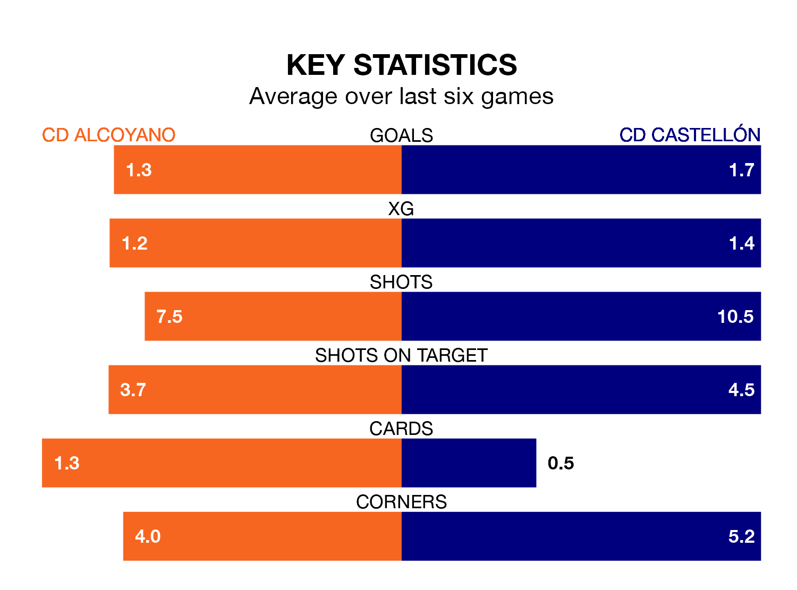

CD Alcoyano host CD Castellón on Sunday at Campo Municipal El Collao in Primera Division RFEF Group 2.
In their last league match, on March 3, Alcoyano drew with Atlético Madrid B 1-1 away, with their goal scored by Cristian Fernández Rodríguez.
Castellón won, 1-0 at home against San Fernando CD.
With 55 goals in 26 games so far this season, Castellón are the league's highest scorers with 2.1 goals per game. And they are conceding fewer than average, letting in 24 goals at a rate of 0.9 per game.
Alcoyano, meanwhile, are below average scorers, with 1.0 goal per game, compared to a league average of 1.1. They have conceded 1.1 goals per game.
The away side are top of the table after 26 games, of which they have won 19 and drawn three, earning 60 points.
The hosts are 12 places behind Castellón in 13th, with nine wins and six draws putting them on 33 points.
In Jesús De Miguel Alameda, Castellón have the league's most on-form striker so far this season. He has notched 15 goals in 23 appearances.
His goal rate of one every 128 minutes is much quicker than that of Imanol García Lugea, Alcoyano's top scorer with a goal every 364 minutes, and a total of four goals in 21 games.
In the last 10 years, Alcoyano and Castellón have played each other on eight occasions. Castellón won four of them and they drew four times.
On average, Alcoyano scored 0.6 goals and Castellón 1.5 in those matches.
Their last meeting was on November 5, when Castellón won 2-0 at home.
Alcoyano are in mixed form in Primera Division RFEF Group 2, with two wins and two draws from their last six games.
With three wins and two draws over that period, the visitors' form is better – they have taken 11 points from 18, compared to the home team's eight.
Updated: 09:34 (UTC), 08/03/24